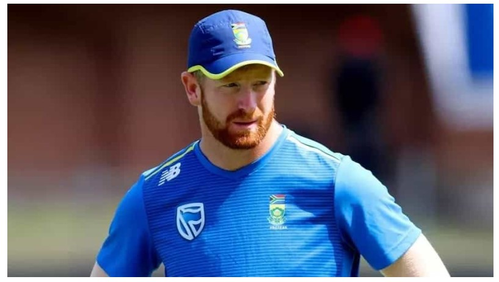

Heinrich Klaasen
Heinrich Klaasen

FULL NAME:Heinrich Klaasen
BORN:July 30, 1991, Pretoria, Transvaal
AGE:32y 313d
BATTING STYLE:Right hand Bat
BOWLING STYLE:Right arm Offbreak
FIELDING POSITION:Wicketkeeper
PLAYING ROLE:Wicketkeeper Batter
EDUCATION:High School Menlopark
SUMMARY
A wicketkeeper-batter known for his belligerent six-hitting, Heinrich Klaasen first got his chance in the South African team as an injury replacement, opening in place of Quinton de Kock, but went on to establish himself in the middle order in limited-overs cricket. Schooled at Menlopark High School and the University of Pretoria, Klaasen made his first-class debut for Northerns in the 2012-13 season and averaged 42.58 in the provincial three-day cup. He scored his first franchise hundred in February 2017: 195 to help Titans beat Dolphins in the penultimate round of the first-class competition.Klaasen made 69 off 30 balls in his second T20I, against India in Centurion in 2018. His first international hundred also came at home, an unbeaten 123 in a big one-day win over Australia in Paarl two years on. In 2023, he stunned the same opposition with a breathtaking display of power-hitting in Centurion to score 174 off 83 balls - the second-highest individual score by a batter playing at No. 5 or lower in ODIs. His phenomenal numbers against slow bowling - he struck at 191 and averaged 132 against spin in the 2023 IPL - have made him a valuable player among T20 franchises. Klaasen made his Test debut in 2019, but opportunities in the format have been few and far between. He got his first national contract in 2021, shortly after captaining a second-string T20I side in Pakistan.Signature